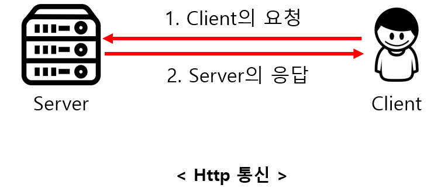

일반적으로 단말기에서 필요로 하는 데이터들은 Server에서 관리합니다. 네트워크를 통해 서버로부터 데이터를 가져오기 위한 통신 방식은 크게 Http 통신과 Socket 통신 2가지가 있는데, 오늘은 이 2가지 통신 방식의 차이에 대해 알아보도록 하겠습니다.
Http 통신
Client의 요청(Request)이 있을 때만 서버가 응답(Response)하여 해당 정보를 전송하고 곧바로 연결을 종료하는 방식
Http통신은 Client의 요청이 있을 때만 Server가 응답하여 처리를 한 후에 연결을 끊는 방식입니다. 이러한 연결 방식은 Client가 요청을 보내는 경우에만 Server가 응답하는 단방향적 통신으로, Server가 Client로 요청을 보낼수는 없습니다. 이해를 돕기 위해 여러분들이 이 글을 보기 위해 블로그에 들어오는 상황을 예로 들어보겠습니다. 여러분들이 이 글을 위한 링크를 클릭한 순간에 Client(웹)는 Server(웹서버)로 이 글에 대한 내용을 보내달라고 요청을 한 것입니다. 이 글에 대한 내용들을 받은 후에는 바로 연결이 종료됩니다. 그렇기 때문에 요청을 보낼때, 내용을 기다리는 시간과 함께 연결하는 시간이 들어가게 됩니다. 이러한 Http 통신은 실시간 연결이 아닌, 필요한 경우에만 Server로 접근하는 콘텐츠 위주의 데이터를 사용할 때 용이합니다. 만약 게시물에 대한 내용을 요청하기 위해 실시간으로 연결을 유지하는 Socket통신을 사용하게 되면, 게시물을 받은 후에도 계속 통신을 위한 연결이 성립되어 있어 부하가 걸리게 됩니다. 일반적으로 모바일 어플리케이션은 필요한 경우에만 Server로 정보를 요청하는 경우가 많은데, 이러한 Web Server로 Http 통신을 주로 사용하며 비용 및 유지보수 등 대부분의 방면에서 좋습니다.

Http 통신의특징
- Client가 요청을 보내는 경우에만 Server가 응답하는 단방향 통신이다.
- Server로부터 응답을 받은 후에는 연결이 바로 종료된다.
- 실시간 연결이 아니고, 필요한 경우에만 Server로 요청을 보내는 상황에 유용하다.
- 요청을 보내 Server의 응답을 기다리는 어플리케이션(Android or Ios)의 개발에 주로 사용된다.
Socket 통신
Server와 Client가 특정 Port를 통해 실시간으로 양방향 통신을 하는 방식
Socket통신은 Http 통신과 달리 Server와 Client가 특정 Port를 통해 연결을 성립하고 있어 실시간으로 양방향 통신을 하는 방식입니다. Client만 필요한 경우에 요청을 보내는 Http 통신과 달리 Socket 통신은 Server 역시 Client로 요청을 보낼 수 있으며, 계속 연결을 유지하는 연결지향형 통신이기 때문에 실시간 통신이 필요한 경우에 자주 사용됩니다. 예를 들면, 실시간 Streaming 중계나 실시간 채팅과 같이 즉각적으로 정보를 주고받는 경우에 사용합니다. 예를 들어 실시간 동영상 Streaming 서비스를 Http 통신으로 구현하였다고 가정하겠습니다. 이러한 경우에 사용자가 서버로 동영상을 요청하기 위해서는 동영상이 종료되는 순간까지 계속해서 Http 통신을 보내야 하고 이러한 구조는 계속 연결을 요청하기 때문에 부하가 걸리게 됩니다. 그러므로 이러한 경우에는 Socket을 통해 구현하는 것이 적합합니다.

Socket 통신의 특징
- Server와 Client가 계속 연결을 유지하는 양방향 통신이다.
- Server와 Client가 실시간으로 데이터를 주고받는 상황이 필요한 경우에 사용된다.
- 실시간 동영상 Streaming이나 온라인 게임 등과 같은 경우에 자주 사용된다.